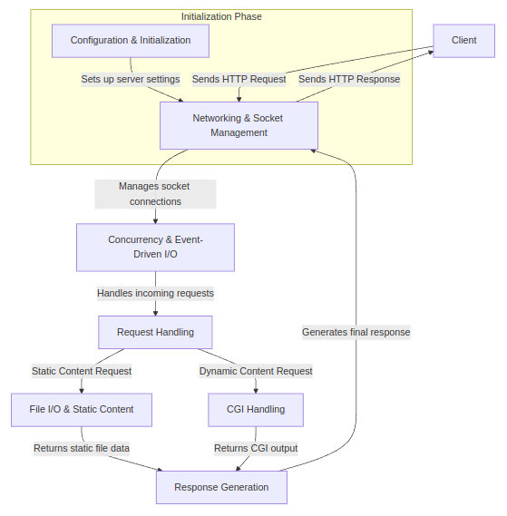

Webserv Project - Module Diagram with Details
This project consists of eight distinct submodules, each focusing on a specific area of functionality required for building the web server. Each module has clearly defined inputs, outputs, providers, and consumers, ensuring seamless communication between the different components of the web server.
-
Configuration & Initialization
- Provider of Input: Server administrator (provides configuration file)
- Input: Server configuration file (e.g., .conf file)
- Output: Initialized server settings (ports, routes, error pages)
- Consumer of Output: Networking & Socket Management module
- Responsibility: Reads and parses the configuration file to initialize server parameters such as ports, virtual hosts, routes, and error handling settings.
-
Networking & Socket Management
- Provider of Input: Configuration & Initialization module
- Input: Server configuration (port, IP address)
- Output: Active socket connections
- Consumer of Output: Concurrency & Event-Driven I/O module
- Responsibility: Manages the creation of network sockets and listens for incoming client connections, establishing communication channels.
-
Concurrency & Event-Driven I/O
- Provider of Input: Networking & Socket Management module
- Input: Active socket connections
- Output: Concurrent request handlers
- Consumer of Output: Request Handling module
- Responsibility: Manages multiple client connections simultaneously using non-blocking I/O and event-driven techniques to handle requests efficiently.
-
Request Handling
- Provider of Input: Concurrency & Event-Driven I/O module (active requests)
- Input: Incoming HTTP requests
- Output: Parsed request data (HTTP method, headers, body)
- Consumer of Output: Response Generation or CGI Handling modules
- Responsibility: Parses incoming HTTP requests, extracting relevant information such as headers, methods (GET, POST), and body content for further processing.
-
Response Generation
- Provider of Input: Request Handling module or CGI Handling module
- Input: Parsed request data or CGI output
- Output: HTTP response (headers, body)
- Consumer of Output: Networking & Socket Management module (for sending the response to the client)
- Responsibility: Generates and formats the HTTP response, including headers and body (e.g., HTML, JSON), to send back to the client.
-
CGI Handling
- Provider of Input: Request Handling module (for dynamic content requests)
- Input: Dynamic content requests (e.g., PHP, Python scripts)
- Output: CGI script output (e.g., HTML, JSON)
- Consumer of Output: Response Generation module (for incorporating dynamic content in the response)
- Responsibility: Executes external CGI scripts (such as PHP or Python) to generate dynamic content for client requests.
-
File I/O & Static Content
- Provider of Input: Request Handling module (for static file requests)
- Input: Requests for static files (e.g., HTML, CSS, images)
- Output: File contents (static HTML, CSS, etc.)
- Consumer of Output: Response Generation module (for incorporating file data in the response)
- Responsibility: Reads static files from the server's file system and prepares them for inclusion in the HTTP response.
-
Error Handling & Logging
- Provider of Input: Any module encountering an error (e.g., Request Handling, Response Generation)
- Input: Errors and events from various modules
- Output: Error logs, HTTP error responses (e.g., 404, 500)
- Consumer of Output: Response Generation module (to send error responses to the client) and system administrator (for logs)
- Responsibility: Logs errors, generates appropriate HTTP error responses, and handles any critical issues to ensure the server remains functional.
Web Server Architecture Diagram

The Error Handling & Logging module has been removed from the web server architecture diagram to simplify the overall design.
Study Plan for Learning and Research Phase
Part 1: Introduction to Web Servers and HTTP
Learning Outcome:
Understand the fundamentals of web servers and the HTTP protocol, including how servers communicate with clients and serve content.
Guided Questions:
- What is a web server? A web server stores and serves web pages to clients via HTTP.
- How does the web server communicate with a client? Via HTTP, it responds to browser requests with the requested content.
- What are the key components of HTTP? Request (method, URL, headers) and response (status code, headers, body).
- What is the difference between static and dynamic content? Static content is pre-built (HTML, CSS), while dynamic content is generated at request time (using CGI).
- How do common web servers (like Apache) work? They listen for client requests, process them, and respond using HTTP.
- What is the role of TCP/IP in web communication? TCP/IP protocols enable reliable data transmission over the internet, providing the foundation for HTTP communication.
- How does DNS relate to web servers? DNS translates domain names to IP addresses, allowing clients to locate web servers on the network.
Summary:
In this part, you will learn the basics of how web servers operate and how they use the HTTP protocol to communicate with clients. You'll explore the roles of requests and responses, understand the difference between static and dynamic content, and gain insights into how popular web servers like Apache function. This foundational knowledge will set the stage for deeper exploration into web server implementation and networking concepts.
Videos and Articles:
Part 2: Understanding the HTTP Request/Response Cycle
Learning Outcome:
Grasp how HTTP requests and responses work, including various methods, status codes, headers, and data encoding techniques.
Guided Questions:
- What is the HTTP request-response cycle? The client sends a request; the server processes it and sends a response.
- What are the HTTP methods, and when are they used?
- GET: Retrieve data.
- POST: Submit data to the server.
- DELETE: Remove a resource on the server.
- PUT: Update or create a resource.
- HEAD: Retrieve headers without the body.
- What are HTTP status codes? Codes indicating the result of the request:
- 200: Success
- 301: Moved Permanently
- 400: Bad Request
- 404: Not Found
- 500: Internal Server Error
- What is the purpose of HTTP headers? They provide metadata about the request or response (e.g., Content-Type, User-Agent, Content-Length).
- How does chunked transfer encoding work? Data is sent in chunks, allowing the server to start transmitting a response before knowing its total size.
- What is the difference between HTTP/1.0 and HTTP/1.1? HTTP/1.1 introduced persistent connections, chunked transfer encoding, and additional caching mechanisms.
Summary:
This section delves into the intricacies of the HTTP protocol, focusing on how clients and servers exchange information. You'll learn about various HTTP methods and their appropriate use cases, understand the significance of status codes, and explore the role of headers in conveying metadata. Additionally, you'll study data encoding methods like chunked transfer encoding and examine enhancements introduced in HTTP/1.1. Understanding these concepts is crucial for implementing a compliant and efficient web server.
Videos and Articles:
Part 3: Deep Dive into C++ and Networking Basics
Learning Outcome:
Acquire a solid understanding of C++ programming, socket programming, and fundamental networking concepts necessary for building a web server.
Guided Questions:
- What is socket programming? It enables communication over a network between a client and server using sockets.
- How do you set up a TCP server in C++? Use
socket(), bind(), listen(), accept(), send(), and recv() to handle connections.
- What is non-blocking I/O? It allows the server to handle multiple clients without waiting for I/O operations to complete.
- How does a server handle multiple connections? Using event loops (e.g.,
select(), poll()) or multithreading to manage clients concurrently.
- How do you handle errors in socket programming? Use error-checking functions and handle specific errors like timeouts (
EAGAIN, ECONNRESET).
- What are the differences between TCP and UDP? TCP is connection-oriented and reliable, while UDP is connectionless and faster but less reliable.
- How does the OSI model relate to networking? It provides a conceptual framework to understand how different networking protocols interact across layers.
- What are some best practices in C++ programming for network applications? Use RAII for resource management, handle exceptions carefully, and ensure thread safety.
Summary:
In this part, you'll dive deep into C++ programming and networking essentials. You'll learn how to create a TCP server using socket programming, manage multiple client connections, and implement non-blocking I/O operations. Understanding error handling in network communication is also crucial. Additionally, you'll revisit key C++ concepts and best practices to write efficient, robust, and maintainable code for your web server project.
Videos and Articles:
Part 4: Review Configuration Files and Server Setup
Learning Outcome:
Understand how to read and write configuration files for web servers, set up server blocks, virtual hosts, and manage server settings securely.
Guided Questions:
- What is the purpose of a configuration file? It specifies server settings, such as ports, root directories, and error pages.
- How do you define virtual hosts? By mapping domain names or IP addresses to specific server configurations.
- What are key configuration directives? Directives like
server_name, error_page, and root control server behavior.
- How do you define routes in a configuration? By mapping URL paths to specific files or scripts on the server.
- How do you manage request limits and timeouts? Set configuration parameters for maximum request size and connection timeouts to protect the server.
- What is the importance of configuration file syntax and structure? Proper syntax ensures the server can parse and apply settings without errors.
- How can you validate and test configuration files? Use tools or built-in commands (e.g.,
nginx -t) to test configurations before applying them.
Summary:
This section focuses on the role of configuration files in web servers. You'll learn how to parse configuration files, define server blocks and virtual hosts, and specify crucial settings like error pages and root directories. Understanding how to manage request limits and timeouts through configurations is essential for server security and performance. Additionally, you'll explore best practices for writing, validating, and maintaining configuration files to ensure your server runs smoothly.
Videos and Articles:
Part 5: Exploring CGI and Dynamic Content
Learning Outcome:
Learn how CGI scripts work for dynamic content generation and how to integrate and handle them within a web server.
Guided Questions:
- What is CGI? CGI (Common Gateway Interface) allows the server to run external programs to generate dynamic content.
- How does CGI handle input and output? CGI scripts receive request data via environment variables and standard input, and return content via standard output.
- How do you implement CGI in a server? Use
fork() and execve() to run scripts like Python or PHP, passing necessary environment variables.
- What are security considerations for CGI? Prevent code injection by validating inputs and securely managing environment variables.
- How does CGI handle chunked transfer encoding? The server unchunks the request before sending it to the CGI script, and the CGI response is sent back chunked if necessary.
- What are the performance implications of using CGI? Each CGI request spawns a new process, which can be resource-intensive; alternatives like FastCGI can mitigate this.
- How do environment variables work in CGI? Environment variables pass request metadata (e.g.,
REQUEST_METHOD, CONTENT_TYPE) to the CGI script.
Summary:
In this part, you'll explore how to generate dynamic content using CGI scripts. You'll understand how the server interacts with external programs to process requests and produce responses. Key topics include managing input and output for CGI scripts, implementing them securely, and handling data encoding. Recognizing the security risks and performance considerations associated with CGI is crucial for building a robust web server.
Videos and Articles:
Part 6: Advanced Concepts and Project-Specific Requirements
Learning Outcome:
Master advanced web server features, focusing on concurrency, performance optimization, security, and additional functionalities relevant to the project.
Guided Questions:
- How do you handle file uploads and static content? Parse
multipart/form-data for file uploads and serve static files from the server's filesystem.
- How do you manage concurrency and performance? Use non-blocking I/O and optimize event loops to handle many clients efficiently.
- How do you implement error handling and logging? Return proper status codes and log both successful requests and errors for debugging and monitoring.
- How do you ensure security (timeouts, limits, validation)? Implement input validation, set timeouts, and restrict request sizes to prevent attacks like DoS.
- What bonus features can enhance your server? Support cookies, session management, HTTPS, and multiple CGI handlers for advanced functionality.
- What is load balancing, and how can it be implemented? Distribute incoming requests across multiple servers to improve performance and reliability.
- How can you implement SSL/TLS in your server? Use libraries like OpenSSL to encrypt data transmitted between the client and server.
Summary:
This final part focuses on advanced topics and specific requirements for your web server project. You'll learn how to handle file uploads, serve static content efficiently, and manage multiple client connections simultaneously. Emphasis is placed on implementing robust error handling, logging mechanisms, and security measures to safeguard your server. Additionally, you'll explore optional features like session management and SSL/TLS encryption to enhance functionality and security.
Videos and Articles:
Tasks to Master by End of Research and Learning Phase
Basic HTTP Protocol (1.1):
- Handle GET, POST, and DELETE requests.
- Manage different HTTP response codes (200, 400, 404, 500, etc.).
- Implement chunked transfer encoding.
Configuration Parsing:
- Read a configuration file (usually in a .conf format).
- Define multiple server blocks (virtual hosts).
- Specify ports, server names, error pages, root directories, and more.
CGI Handling:
- Handle CGI scripts (e.g., PHP, Python) for dynamic content generation.
- Support environment variables and interaction with scripts.
Concurrency and Connections:
- Manage multiple client connections concurrently.
- Handle both blocking and non-blocking I/O operations (select, poll, or epoll).
Static File Handling:
- Serve static files such as HTML, CSS, JavaScript, images, etc.
- Handle file permissions, directories, and indexes (directory listing).
Security and Error Handling:
- Implement proper error handling and logging.
- Manage timeouts, request size limits, and other security concerns (e.g., request validation).
Performance:
- Ensure the server is performant, handling large amounts of requests efficiently.
- Implement basic load balancing between requests.